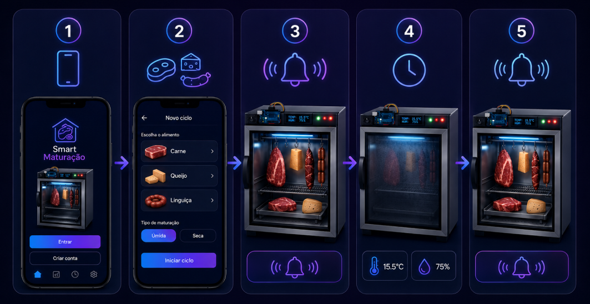

Guia de Inicialização do MatureBox
Siga os passos técnicos precisos para configurar seu ambiente de maturação. Cada etapa é crucial para garantir a estabilidade do ecossistema IoT e a qualidade final do produto.

Energização
Conecte o dispositivo a uma fonte de energia ininterrupta. Aguarde o ciclo de boot do sistema central. O LED indicador frontal piscará em azul elétrico durante a inicialização.
Conectividade IoT
Acesse o painel web local via IP padrão. Configure os parâmetros da sua rede Wi-Fi para permitir o envio contínuo de telemetria dos sensores para a nuvem.
Calibração Térmica
Execute a rotina de auto-calibração no aplicativo. O sistema estabilizará a temperatura interna e validará a precisão dos termopares antes do uso.
Inoculação e Setup
Com o ambiente estabilizado, insira o produto alvo. Selecione o perfil de maturação correspondente no painel de controle. O sistema me ajustará a umidade relativa e o fluxo de ar automaticamente com base no algoritmo preditivo.
Monitoramento
O processo iniciou. Utilize a aba "Dashboard" para visualizar os gráficos em tempo real. Alertas serão emitidos caso haja desvio dos parâmetros ideais.